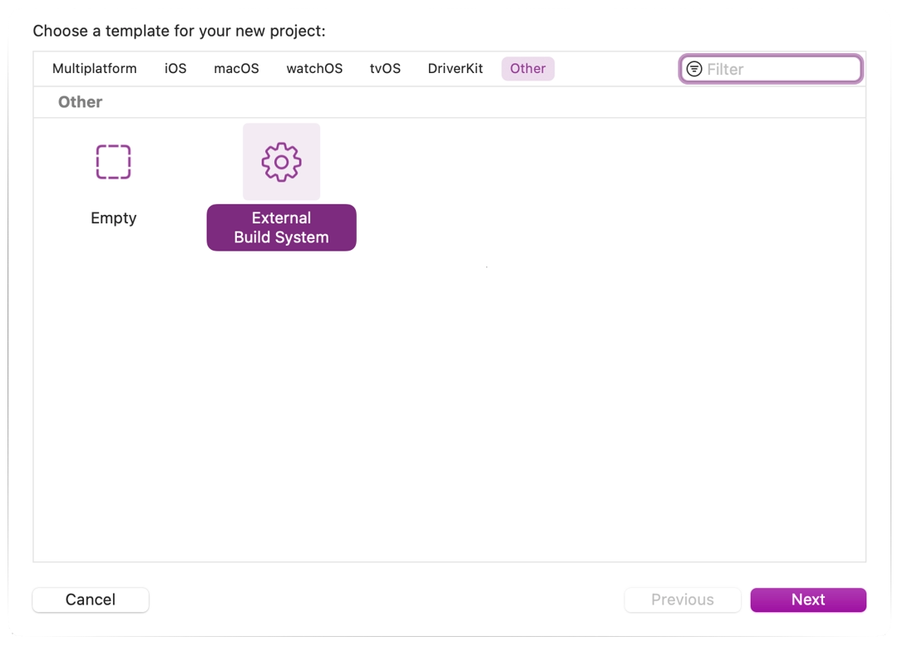
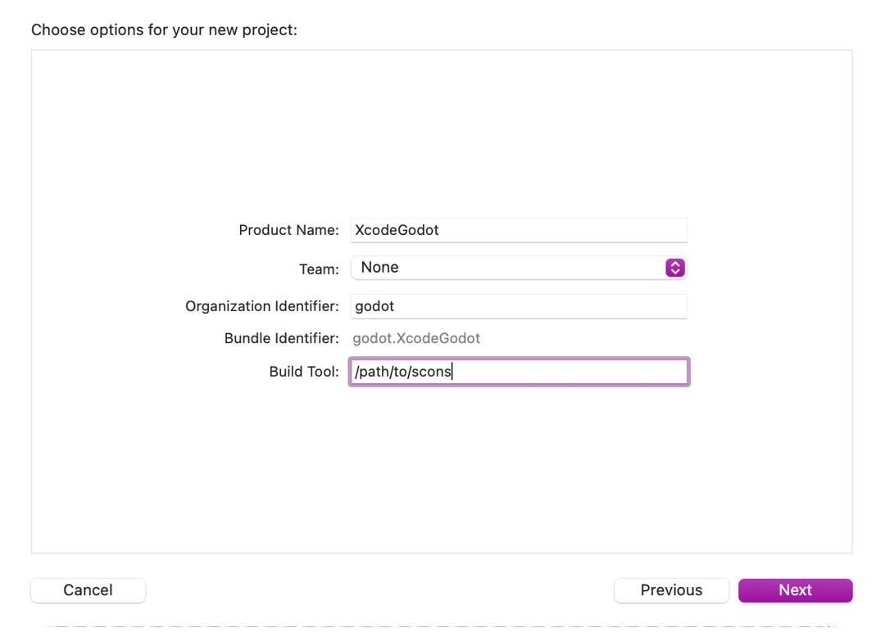
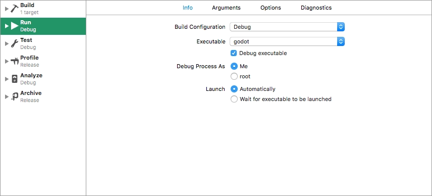

Xcode
Xcode là một IDE miễn phí chỉ dành cho macOS. Bạn có thể tải nó từ Mac App Store.
Import dự án
Từ màn hình chính của Xcode, tạo một dự án mới bằng template Other > External Build System.

Bây giờ hãy chọn tên cho dự án và đặt đường dẫn đến tệp thực thi scons trong build tool (để tìm đường dẫn, bạn có thể gõ
where sconstrong terminal).

Mở target chính từ mục Targets và chọn tab Info.

Điền vào biểu mẫu với các cài đặt sau:
Tham số
Xem Giới thiệu về hệ thống build để biết danh sách đầy đủ các tham số.
Thư mục
Đường dẫn đầy đủ đến thư mục gốc của Godot
Thêm một target Command Line Tool sẽ được dùng để lập chỉ mục dự án bằng cách chọn File > New > Target....

Chọn macOS > Application > Command Line Tool.

Ghi chú
Đặt một cái tên để bạn biết không biên dịch bằng target này (ví dụ GodotXcodeIndex).
Với target này, mở tab Build Settings và tìm Header Search Paths.
Đặt Header Search Paths thành đường dẫn tuyệt đối đến thư mục gốc của Godot. Bạn cũng cần bao gồm các thư mục con. Để làm vậy, hãy thêm hai dấu sao (
**) vào cuối đường dẫn, ví dụ/Users/me/repos/godot-source/**.Thêm mã nguồn Godot vào dự án bằng cách kéo và thả nó vào trình duyệt tệp của dự án.
Chọn Create groups cho tùy chọn Added folders và chỉ đánh dấu target lập chỉ mục command line của bạn trong mục Add to targets.

Xcode bây giờ sẽ lập chỉ mục các tệp. Việc này có thể mất vài phút.
Khi Xcode lập chỉ mục xong, bạn sẽ có tính năng nhảy đến định nghĩa, tự hoàn thành và tô sáng cú pháp đầy đủ.
Gỡ lỗi dự án
Để bật hỗ trợ debug, bạn cần chỉnh sửa các scheme build và run của external build target.
Mở trình chỉnh sửa scheme của external build target.
Tìm mục Build > Post Actions.
Thêm một hành động chạy script mới
Trong Provide build settings from, chọn dự án của bạn. Điều này cho phép tham chiếu đến thư mục dự án bên trong script.
Tạo một script đặt cho tệp nhị phân một cái tên mà Xcode có thể nhận ra, ví dụ:
ln -f ${PROJECT_DIR}/godot/bin/godot.macos.tools.64 ${PROJECT_DIR}/godot/bin/godot

Build external build target.
Mở lại trình chỉnh sửa scheme và chọn Run.

Đặt Executable thành tệp bạn đã liên kết trong script post-build action.
Đánh dấu Debug executable.
Bạn có thể thêm hai tham số trong tab Arguments: cờ
-emở trình chỉnh sửa thay vì Project Manager, và tham số--pathyêu cầu tệp thực thi mở dự án được chỉ định (phải được cung cấp dưới dạng đường dẫn tuyệt đối đến thư mục gốc của dự án, không phải tệpproject.godot).
Để kiểm tra mọi thứ có hoạt động không, hãy đặt một breakpoint trong platform/macos/godot_main_macos.mm và chạy dự án.
Nếu gặp vấn đề, hãy nhờ trợ giúp tại một trong các kênh cộng đồng của Godot.